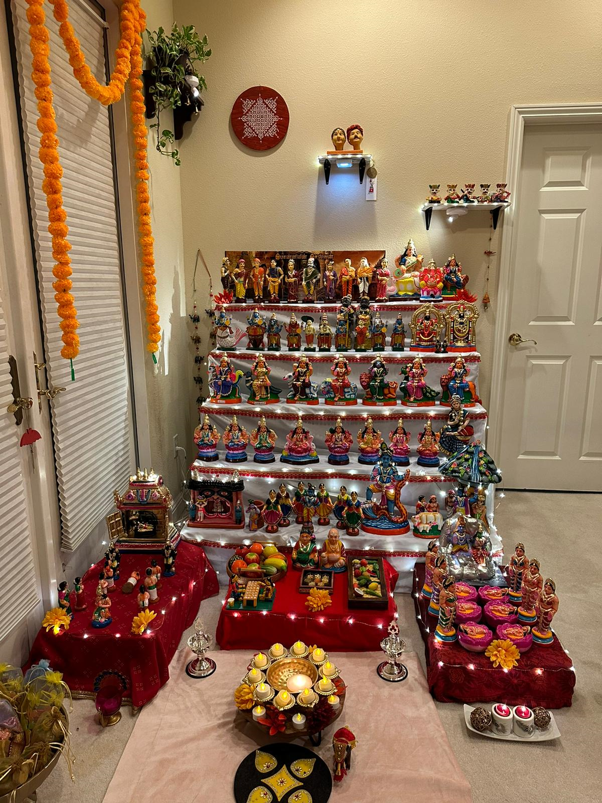

✨ Sandhiya & Karthik's Golu 2025 ✨
Explore divine stories retold through Golu displays.
- 2025 Theme : Kaigalil Deivam – The Divine in Everyday Hands
- Saptamātā - The Seven Divine Mothers
- Aṣṭalakṣmī - The Eight Forms of Lakshmi
- Daśāvatāram - The Ten Avatars of Vishnu
- Kārthigai Peṅgal - The Six Divine Sisters
- Pazhani Malai Kavadi - Devotion to Lord Muruga
- Ponniyin Selvan - The Son of the River Kaveri
- Swargavasal - The Gateway to Heaven
- Vaikundam - The Eternal Abode of Vishnu
- Thiruparkadal - The Cosmic Ocean of Milk
- Ulagalanda Perumal - The Lord Who Measured the Worlds
- Shiva Suppressing Ravana at Kailasam
- Krishna Leela - The Playful Deeds of Krishna
